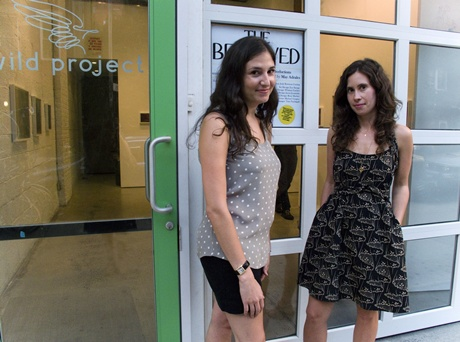

September 23 , 2009
by Jacqueline Bates

Kate Greenberg (left) and Hilary Schaffner
Visit the Wild Project, an eco-conscious gallery (they have a solar-powered roof!) in NYC’s East Village for a photography show by recent Yale MFA grad Bryan Graf, who makes New Jersey look ethereal with beautiful, meditative photographs of expansive landscapes and the small details within them. The show is curated by the young duo Hilary Schaffner and Kate Greenberg. Both women have amazing art world pedigrees at their ages: Greenberg has worked for art book publisher Aperture and does publicity for a variety of cool arts organizations (Melanie Flood Projects, Humble Arts Foundation, and indie publisher Charles Lane Press, to name a few), and Shaffner, the director of the Wild Project, has worked at Chelsea gallery Yancey Richardson and managed photographer David Levinthal’s studio. At the same time, they're completing their MFA at the School of Visual Arts' Photography, Video, and Related Media program, where they are tailoring their final year to focus on curatorial practices. I can’t wait to see what they come up with next.